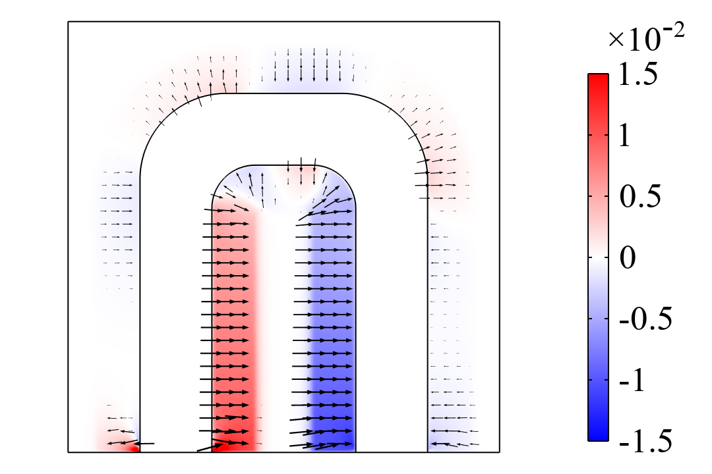

Paper 01
Article
Density-based topology optimization for Navier-Stokes flow with free-slip boundary conditions
This published work introduces a way to impose free-slip boundary conditions in density-based topology optimization for Navier-Stokes flow, using zero tangential viscous stress along implicit walls.